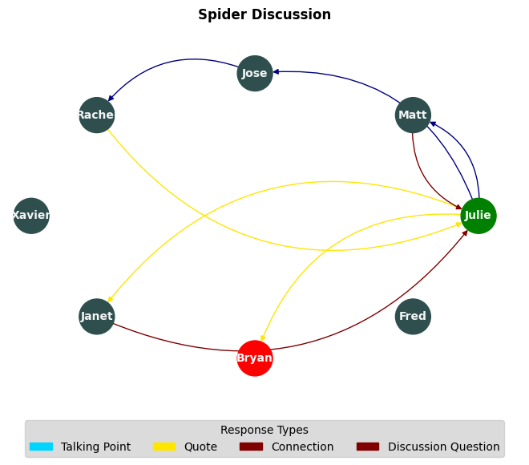

[1]:
# %pip install netgraph
Requirement already satisfied: netgraph in /home/mxc/.virtualenvs/school-data/lib/python3.10/site-packages (4.4.1)
Requirement already satisfied: grandalf in /home/mxc/.virtualenvs/school-data/lib/python3.10/site-packages (from netgraph) (0.7)
Requirement already satisfied: matplotlib in /home/mxc/.virtualenvs/school-data/lib/python3.10/site-packages (from netgraph) (3.5.1)
Requirement already satisfied: numpy in /home/mxc/.virtualenvs/school-data/lib/python3.10/site-packages (from netgraph) (1.22.3)
Requirement already satisfied: rectangle-packer in /home/mxc/.virtualenvs/school-data/lib/python3.10/site-packages (from netgraph) (2.0.1)
Requirement already satisfied: scipy in /home/mxc/.virtualenvs/school-data/lib/python3.10/site-packages (from netgraph) (1.8.0)
Requirement already satisfied: pyparsing in /home/mxc/.virtualenvs/school-data/lib/python3.10/site-packages (from grandalf->netgraph) (3.0.8)
Requirement already satisfied: cycler>=0.10 in /home/mxc/.virtualenvs/school-data/lib/python3.10/site-packages (from matplotlib->netgraph) (0.11.0)
Requirement already satisfied: fonttools>=4.22.0 in /home/mxc/.virtualenvs/school-data/lib/python3.10/site-packages (from matplotlib->netgraph) (4.33.3)
Requirement already satisfied: python-dateutil>=2.7 in /home/mxc/.virtualenvs/school-data/lib/python3.10/site-packages (from matplotlib->netgraph) (2.8.2)
Requirement already satisfied: packaging>=20.0 in /home/mxc/.virtualenvs/school-data/lib/python3.10/site-packages (from matplotlib->netgraph) (21.3)
Requirement already satisfied: pillow>=6.2.0 in /home/mxc/.virtualenvs/school-data/lib/python3.10/site-packages (from matplotlib->netgraph) (9.1.0)
Requirement already satisfied: kiwisolver>=1.0.1 in /home/mxc/.virtualenvs/school-data/lib/python3.10/site-packages (from matplotlib->netgraph) (1.4.2)
Requirement already satisfied: six>=1.5 in /home/mxc/.virtualenvs/school-data/lib/python3.10/site-packages (from python-dateutil>=2.7->matplotlib->netgraph) (1.16.0)
Note: you may need to restart the kernel to use updated packages.
[1]:
import networkx as nx #to create the diagram
from pandas import DataFrame #to read the excel sheet
import pandas as pd #to read the excel sheet
import matplotlib.pyplot as plt #plots the visuals
import matplotlib.patches as mpatches #allows custom legend
from netgraph import InteractiveGraph # pip install netgraph
#for getting the names from the excel sheet
filename = 'Sample1.xlsx'
xls = pd.read_excel(filename, sheet_name=None)
students = pd.read_excel(filename, sheet_name="names")
response_types = pd.read_excel(filename, sheet_name="response_types")
df = pd.read_excel(filename, sheet_name="discussion_data")
df = df.merge(response_types, how="left", on="response_type")
students
[1]:
| name | |
|---|---|
| 0 | Julie |
| 1 | Matt |
| 2 | Jose |
| 3 | Rachel |
| 4 | Xavier |
| 5 | Janet |
| 6 | Bryan |
| 7 | Fred |
[2]:
# first create the Graph -- this is the collection of all of the nodes and edges
G = nx.MultiDiGraph()
# add a node for each student
G.add_nodes_from(students["name"])
[3]:
# make edges from the speaker/responder lists
edges = list(zip(df["speaker"], df["responder"]))
G.add_edges_from(edges)
first_speaker = edges[0][0]
last_responder = edges[-1][1]
def speaker_color(n):
if n == first_speaker:
return "green"
if n == last_responder:
return "red"
return "darkslategray"
students["color"] = students["name"].apply(speaker_color)
node_color_map = {}
# # a lambda function has one statement and returns that result
def get_color(row):
node_color_map[row["name"]] = row.color
students.apply(get_color, axis=1)
node_color_map
[3]:
{'Julie': 'green',
'Matt': 'darkslategray',
'Jose': 'darkslategray',
'Rachel': 'darkslategray',
'Xavier': 'darkslategray',
'Janet': 'darkslategray',
'Bryan': 'red',
'Fred': 'darkslategray'}
[5]:
node_colors = [node_color_map[n] for n in students["name"]]
cmap = plt.cm.get_cmap('jet', len(response_types))
nx.draw_circular(G,
node_color=node_colors,
with_labels=True,
node_size=1000,
font_weight='bold',
font_size=10,
connectionstyle='arc3, rad = 0.4',
font_color="whitesmoke",
edge_color=df["response_type"],
edge_cmap=cmap)
#adds the title for the visualization
#pulls the discussion name and concatenates it with the string 'Discussion Visualization'
plt.title("Spider Discussion", fontweight="bold")
# sets background color of the legend/other plt items
plt.rcdefaults()
plt.rcParams.update({'axes.facecolor':'lightgray'})
# creates the legend for the visualization
handles = []
response_types = response_types.sort_values(by="response_type")
def make_legend(row):
print(row.response_type, row.response_name)
handles.append(mpatches.Patch(color=cmap(row.response_type), label=row.response_name))
response_types.apply(make_legend, axis=1)
plt.legend(title='Response Types', bbox_to_anchor=(.5, -0.01),
loc='upper center',
ncol=len(handles), handles=handles)
plt.show()
1 Talking Point
2 Quote
3 Connection
4 Discussion Question

[ ]: